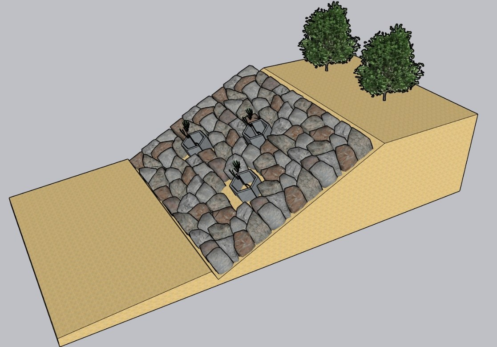
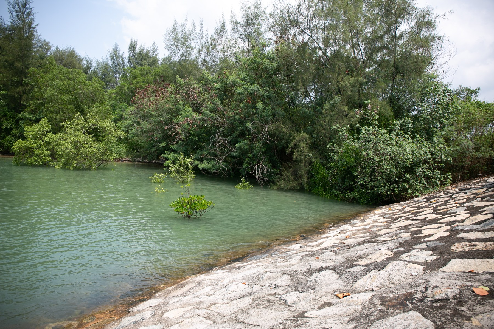
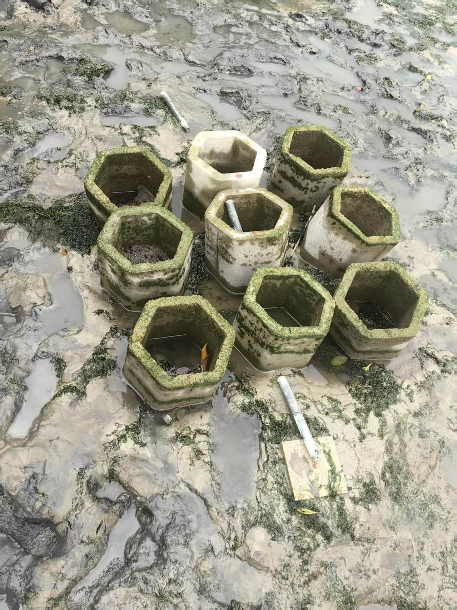

Research programme
Three connected sub-projects
From engineered shelters to living seabeds, each investigation examines a different relationship between coastal structures, vegetation and sediment.
01

Prototype testingHybrid solution integrating mangrove and concrete planterWave reduction, seedling shelter and deployable planter geometry. 02
Ongoing studyHybrid solution of seagrass and perched beachCombining vegetated beds with a raised beach profile to manage waves and sediment. 03
Process researchEvolution of bed geomorphology caused by real seagrassObserving how living seagrass changes flow, sediment transport and the seabed.